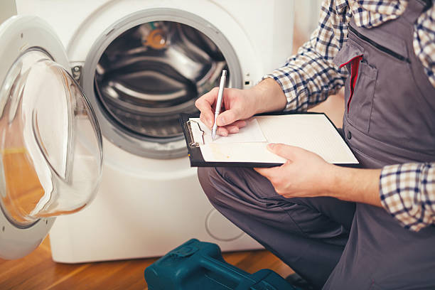

Country Clu Florida
info@usaappliancerepair.pro
Country Clu Florida
info@usaappliancerepair.pro

Reliable appliance repair in Country Clu Florida with guaranteed satisfaction! From dishwashers to ovens, our team delivers expert solutions. Same-day service available to keep your appliances working perfectly.
Click Here To Call Us (877) 848-1711When your appliances break down, it disrupts your daily routine and can become a significant inconvenience. That’s why our appliance repair company in Country Clu Florida is here to provide you with prompt, reliable, and professional services to get your household back on track. Whether it's a malfunctioning refrigerator, a faulty washer, or a stove that won't heat, we’ve got you covered.
Our team of skilled technicians specializes in repairing all major appliance brands, ensuring that your repairs are done right the first time. Using advanced diagnostic tools, we identify the root cause of the problem quickly, saving you time and money. From refrigerators and dishwashers to dryers and ovens, no job is too big or small for our experts in Country Clu Florida .
We pride ourselves on offering same-day service in most cases, minimizing downtime for your appliances. Customer satisfaction is our top priority, which is why we provide affordable pricing, transparent estimates, and a 100% satisfaction guarantee on all our repairs.
Don’t let a broken appliance slow you down! Call us today for the best appliance repair services in Country Clu Florida and let us restore comfort and functionality to your home. Trust the experts—choose reliable appliance repair solutions tailored for your needs in Country Clu Florida .
Residential & commercial Appliance Repair
Quality services at affordable prices
Immediate 24/ 7 emergency services


When it comes to reliable and affordable appliance repair in Country Clu Florida you need experts who can get the job done right the first time. Our team of experienced technicians is dedicated to providing top-tier repair services for all your household appliances, ensuring they function like new again.
Fast, Efficient Service
We understand the importance of your appliances in your daily life. That’s why we offer fast and efficient repair services in Country Clu Florida minimizing any downtime and disruptions to your routine. Whether it's a refrigerator, washer, dryer, or oven, our technicians arrive promptly and are fully equipped to handle any issue, big or small.
Skilled, Licensed Technicians
Our appliance repair experts in Country Clu Florida are licensed, highly trained, and have years of experience working with a wide range of appliance brands. We ensure that every repair is performed with precision and attention to detail, giving you peace of mind knowing your appliances are in good hands.
Affordable, Transparent Pricing
We believe in offering transparent, upfront pricing for all our repair services in Country Clu Florida . No hidden fees, no surprises—just honest, affordable rates to ensure you're getting the best value for your money.
Satisfaction Guaranteed
We stand behind the quality of our work, offering a satisfaction guarantee on all repairs. If you're not completely satisfied with our service, we'll make it right.
Choose our Country Clu Florida appliance repair experts for reliable, professional, and affordable appliance repairs that get your home running smoothly again!
Residential & commercial Appliance Repair
Quality services at affordable prices
Immediate 24/ 7 emergency services
In today’s digital age, smart appliances are becoming common, providing convenience and efficiency. Our Smart Appliance Repair Services are designed to troubleshoot issues that arise in connected devices. From smart refrigerators to Wi-Fi enabled washers, our skilled technicians are proficient in diagnosing and repairing the latest technologies. We pride ourselves on our ability to stay updated with the evolving appliance landscape, ensuring quality service every time. Trust us to handle your smart appliance repairs in Country Clu Florida and benefit from our extensive knowledge and dedication.

Portable appliances offer flexibility and convenience, but they can also face issues. Our Portable Appliance Repair services ensure that your smaller devices are handled with care and expertise. Whether it’s a countertop oven or a portable washer, our skilled technicians can address a range of problems. We understand the importance of these appliances in your day-to-day life, and we prioritize quick and effective solutions. Experience our high-quality service and dedication to customer satisfaction with portable appliance repairs at Country Clu Florida .

Energy-efficient appliances save money and environmental resources, but they occasionally encounter issues. At Appliance Repair, we specialize in energy-efficient appliance repairs, restoring your appliances to optimal energy-saving performance. Our experienced technicians understand the intricacies of eco-friendly technologies and provide diagnostic services that consider energy efficiency, ensuring sustainable solutions. By choosing us, you are guaranteed expert repairs that prioritize both performance and the environment .

Appliance emergencies can happen at any moment, disrupting your home or business. Our Emergency Appliance Repair Services are available when you need help the most. Our trained technicians are ready to respond quickly and efficiently to any crisis involving your appliances, from broken refrigerators to malfunctioning ovens. We understand the urgency of these situations, providing timely solutions regardless of the time of day. Choose us for your emergency needs, and rest assured that our commitment to excellence is always at your service .

Preventive care is key to extending the life of your appliances. Our Appliance Maintenance Plans offer comprehensive care to keep your appliances in peak condition. With regular inspections and tune-ups from our trained technicians, you can catch potential issues before they become costly repairs. Our plans are tailored to meet your specific needs, providing peace of mind and enhanced appliance performance. Trust us to offer quality maintenance services designed to protect your investments and prolong the lifespan of your appliances .
Proper installation is crucial for your appliances to function optimally. Our Appliance Installation and Setup Services in Country Clu Florida ensure that your new appliances are installed correctly and safely. Our skilled technicians are experienced in handling a variety of home and commercial appliances, providing expert setup along with any necessary repairs. We take the hassle out of appliance installation, offering seamless service that prioritizes quality and safety. Count on us for top-notch installation and repair services tailored to your needs and experience the quality of professional service.

Gas appliances require specialized knowledge for safe and effective repairs. Our Gas Appliance Repair Services provide essential solutions to ensure your gas equipment operates safely and efficiently. From stoves to water heaters, our trained technicians understand the intricacies of gas systems and are adept at troubleshooting and repairing any issues. We prioritize your safety and the efficiency of your appliances, offering reliable service with a focus on quality and customer satisfaction. Trust us as the go-to service provider for gas appliance repairs in Country Clu Florida .

Faulty control panels can render appliances unusable, leading to frustration and delays. At Appliance Repair, we specialize in appliance control panel repairs, addressing issues that impact functionality across various appliance brands and models. Our expert technicians can diagnose control panel malfunctions and implement effective repair solutions to restore your appliances’ operational logic. With our commitment to quality and customer satisfaction, we ensure your appliances work reliably once more. For expert control panel repairs in Country Clu Florida trust us to solve your issues.

Vintage and antique appliances hold charm and nostalgia, but they may need specialized care due to their unique construction. At Appliance Repair, we offer vintage and antique appliance repair services that respect the integrity of your treasured items. Our technicians possess in-depth knowledge of older appliance models, utilizing traditional and modern techniques to restore them without compromising their character. With our focus on craftsmanship and attention to detail, we provide exceptional service for preserving your vintage treasures in Country Clu Florida . Choose us for your antique repair needs.
Years Experience
Expert Technicians
Satisfied Clients
Compleate Projects
At Appliance Repair, we understand the inconvenience and frustration that comes with a malfunctioning appliance. Serving homes and businesses across all cities in Country Clu Florida our team of certified technicians is committed to providing prompt, reliable, and affordable solutions. Whether it's your refrigerator, washing machine, or stove, we have the expertise to get your appliances back in top condition.
What sets us apart from other repair services in Country Clu Florida is our unwavering dedication to quality. We use the latest diagnostic tools to quickly identify the root cause of the issue, ensuring that repairs are both efficient and long-lasting. Our technicians are highly trained and stay updated on the latest appliance technologies to deliver precise repairs every time.
We pride ourselves on offering transparent pricing with no hidden fees, so you can trust that you’re receiving excellent service at a fair price. Our flexible scheduling options cater to your busy life, and we always strive to offer same-day or next-day service to minimize any disruption to your routine.
What’s more, we stand behind our work with a satisfaction guarantee. If you’re not completely satisfied with our service, we’ll do everything we can to make it right. Choose Appliance Repair for fast, reliable, and affordable appliance repair across Country Clu Florida . Experience the difference of working with the best in the business!
When your refrigerator breaks down, it can lead to significant disruptions in your daily life or business operations. Our Refrigerator Repair Services specialize in diagnosing and fixing all types of refrigerator issues, from temperature control failures to unusual noises and leaks. With years of experience and a team of certified technicians, we pride ourselves on offering prompt, reliable, and affordable refrigerator repairs. Why choose us? We understand that fresh food and beverages are essential for health, and we ensure that your fridge is up and running as quickly as possible. We utilize advanced diagnostic tools and OEM parts to guarantee the highest quality repairs while providing excellent customer service. Trust our local experts to get your refrigerator back to optimal performance.
A malfunctioning washing machine can put a serious dent in your laundry routine. Whether your machine won't spin properly or is leaking water, we’re here to help with our professional Washing Machine Repair services . We pride ourselves on our meticulous attention to detail and prompt response times. Our technicians have extensive training and knowledge in addressing a wide variety of washer issues, including front-load and top-load machines. We offer fast, efficient repairs at competitive rates, ensuring you're back to your regular laundry tasks as soon as possible. By choosing our services, you not only receive expert repairs but also valuable advice on how to maintain your machine's performance long-term. Trust us to restore your washing machine to optimal working condition .
A dryer breakdown can leave you with piles of damp laundry and a lot of frustration. Our Dryer Repair Services focus on restoring your appliance’s efficiency, so you can get back to your regular laundry routine. We handle issues such as insufficient drying, unusual noises, and overheating. Each of our technicians is skilled in diagnosing problems and carrying out effective repairs swiftly. What sets us apart is our passion for quality service and our attention to detail. We believe that every customer deserves the best, which is why we ensure that every repair is done right the first time. Trust us for your dryer repair needs, and enjoy a hassle-free laundry experience.
A dishwasher that's not functioning can lead to piles of dirty dishes and wasted time. At Appliance Repair, we offer top-notch dishwasher repair services to restore convenience to your kitchen. Our technicians are knowledgeable about all makes and models of dishwashers, and they can efficiently diagnose issues whether you're facing drainage problems, leaks, or odd noises. We use only high-quality parts for replacements to ensure durability. With our customer-first approach, we provide flexible scheduling and affordable service options that fit within your budget. Serving Country Clu Florida choose us for exceptional dishwasher repairs.
A broken oven can halt your culinary creations and disrupt family meals. Our Oven and Stove Repair services are designed for homeowners who value quality and reliability. We are known for our prompt response times and thorough inspections, addressing everything from temperature inconsistencies to igniter malfunctions. Our certified technicians bring extensive experience with both gas and electric ovens and stovetops, allowing us to diagnose and resolve issues accurately and efficiently. Customer satisfaction is our priority, which is why we take the time to explain the problems and potential solutions clearly. Choose us for dependable oven repair services .
A microwave that isn’t working correctly can be a major hassle, especially for a busy household. At Appliance Repair, we provide professional microwave repair services that address all kinds of problems, including heating irregularities, noisy operation, or complete failure. Our experienced technicians are trained to work on various microwave brands and models, ensuring that your appliance is in good hands. We take pride in our timely service and dedication to fixing your microwave quickly and affordably. For expert microwave repairs choose us and experience hassle-free service.
A malfunctioning garbage disposal can disrupt your kitchen workflow, leading to frustrations and unpleasant odors. Our Garbage Disposal Repair Services cover everything from jammed disposals to leaks and won’t turn on issues. Our trained technicians use the latest tools and techniques to restore your disposal to proper functioning quickly and safely. We understand the importance of a clean kitchen environment, which is why we prioritize your comfort and satisfaction. Don’t let a malfunctioning garbage disposal ruin your day; count on us for reliable service that’s just a call away .
A broken freezer can result in thawed food and costly waste. At Appliance Repair, we deliver expert freezer repair services that cater to all models and brands. Our technicians are equipped with extensive knowledge of freezer mechanics and cooling systems, enabling them to quickly identify and fix issues such as temperature fluctuations or freezer over-icing. We are committed to providing fast, efficient service that minimizes your stress and restores your appliance to optimal performance. For trusted freezer repairs look no further than us.
Ice makers play a crucial role in businesses and households alike. When yours breaks down, it can affect both comfort and service delivery. Our Ice Maker Repair Services in Country Clu Florida provide solutions for a variety of issues, including insufficient ice production and leaks. Our knowledgeable technicians are adept at working with both standalone units and those built into refrigerators. With our prompt diagnostics and repairs, you can trust us to get your ice maker operational quickly. Customer satisfaction is our top priority; we provide warranties on our repairs and ensure every job is done right the first time.
Your range hood is vital for maintaining air quality in your kitchen, yet it often gets overlooked until problems arise. Our Range Hood Repair Services in Country Clu Florida focus on ensuring your ventilation system functions efficiently, preventing excess smoke, odors, and humidity from accumulating in your cooking space. Our knowledgeable technicians are adept at fixing a variety of issues, including noisy fans, lighting problems, and duct challenges. With us, you can expect prompt service, expert advice, and assurances of high-quality workmanship. We’ll help you breathe easy with our reliable range hood repair .
For businesses reliant on refrigeration, such as supermarkets and restaurants, a malfunctioning commercial refrigerator can lead to significant financial loss. Our Commercial Refrigerator Repair services in Country Clu Florida are designed with the needs of businesses in mind. We understand that time is of the essence, and our technicians work diligently to diagnose the issue and provide swift solutions. With extensive experience in commercial equipment, we ensure that your refrigeration systems are operating at peak performance. Our commitment to quality and reliability sets us apart as the leading choice for commercial refrigerator repair .
Running a restaurant requires seamless operations, and we understand the crucial role appliances play in your kitchen. Our Restaurant Appliance Repair services cater to various equipment including ovens, grills, and fryers. Our skilled technicians are well-versed in the intricacies of restaurant appliances, ensuring quick and effective repairs. We prioritize minimizing downtime and maximizing efficiency, because we know that every minute counts in the food service industry. As experts in restaurant appliance repair, we are committed to delivering exceptional service and support, guaranteeing that your kitchen operates smoothly.
In fast-paced commercial kitchens, an operational industrial dishwasher is essential to maintaining sanitation and efficiency. At Appliance Repair, we provide specialized industrial dishwasher repair services, ensuring that your kitchen remains compliant and functional. Our experienced technicians can resolve a wide range of issues, from drainage failures to mechanical malfunctions, minimizing disruptions to your service. With our commitment to quality and swift response times, we’re prepared to support your business's needs . Choose us for dependable repairs.
Efficient cooking equipment is crucial in commercial kitchens. Our Commercial Oven and Range Repair services ensure that your kitchen never skips a beat. Our certified technicians work meticulously to diagnose problems, whether they involve temperature deviations, electronic malfunctions, or structural issues. We commit to quality and reliability, ensuring that your cooking appliances are restored to peak performance quickly, minimizing downtime. Let us help you maintain your kitchen's efficiency and productivity by choosing us for your commercial oven repairs .
The demand for consistent temperature control is crucial for businesses that rely on walk-in freezers. Our Walk-In Freezer Repair Services in Country Clu Florida specialize in maintaining the integrity of your refrigeration system. We address issues such as compressor failures, inefficient cooling, and temperature control problems. Our technicians are well-versed in the specifics of large-scale freezer systems, ensuring a quick and effective response to any malfunction. Trust us to safeguard your perishable products by choosing our expert repair services in Country Clu Florida .
A laundry operation’s success greatly depends on the efficiency of its equipment. Our Laundry Equipment Repair services are designed for businesses of all sizes, ensuring that your washers and dryers continue to operate at optimal capacity. We diagnose issues ranging from mechanical failures to electrical problems and provide swift, effective repairs. Our team is dedicated to minimizing downtime and enhancing the productivity of your laundry services. Trust us to deliver exceptional repair solutions tailored to meet the demands of your business .
As homes become increasingly connected, the integration of HVAC and appliances is vital for efficiency. Our HVAC and Appliance Integration Repairs focus on bringing seamless functioning to your home's systems. We tackle issues related to your heating, ventilation, and air conditioning systems along with connected appliances, ensuring they work in harmony. Whether you're experiencing control panel issues or need a complete system troubleshooting, our certified technicians are ready to assist. Trust us to enhance your home’s comfort and convenience through expert repair services .
Effective bakery equipment is fundamental to producing outstanding baked goods. At Appliance Repair, we specialize in bakery equipment repair services, addressing ovens, mixers, proofers, and more. Our technicians bring in-depth knowledge of the baking industry's unique demands and can diagnose and repair your equipment swiftly. We recognize that time is of the essence in a baking environment, and our quick response times ensure minimal disruption. Choose us for reliable bakery equipment service that supports your culinary passion .
Food trucks require reliable appliance performance to meet customer demands on the go. At Appliance Repair, we understand the specific challenges mobile kitchens face, and we provide comprehensive food truck appliance repair services. Whether you have issues with your refrigeration units, cooking appliances, or electrical systems, our skilled technicians are prepared to get you back on the road quickly. We prioritize your business’s needs and tailor our service to minimize downtime and maintain quality. For efficient food truck appliance repairs trust us to service your mobile kitchen effectively.
A well-functioning refrigerated display case is crucial for presenting products attractively while keeping them fresh. At Appliance Repair, we offer specialized refrigerated display case repair services to ensure your items are showcased at optimal temperatures. Our technicians can troubleshoot and resolve issues like temperature inconsistencies, lighting failures, and compressor problems effectively. We prioritize exceptional customer service, ensuring we work around your schedule for minimal disruption to your business. For reliable display case repairs in Country Clu Florida choose us.
Luxury appliances require specialized knowledge and expertise to maintain their optimal functionality. Our High-End Appliance Repair Services cater to discerning homeowners and businesses, offering tailored repairs for top-tier brands. Our certified technicians are trained to handle the unique requirements of high-end brands, ensuring that your luxury appliance is serviced properly. We emphasize attention to detail, quality workmanship, and superior customer service, setting us apart in the appliance repair industry. Trust us for your high-end appliance repair needs where sophistication meets reliability.
When it comes to appliance repair in Country Clu Florida reliability, and affordability are key. At Appliance Repair, we specialize in providing fast, dependable, and cost-effective repair services for all major household appliances. Whether your refrigerator isn’t cooling, your washing machine is leaking, or your oven won’t heat, we have the skills and expertise to get your appliances running like new.
Our certified technicians are trained to repair a wide range of appliances, including refrigerators, washers, dryers, ovens, dishwashers, and more. We understand how inconvenient it is when an appliance breaks down, which is why we offer same-day and emergency services to restore your home’s comfort without delay. You can trust us to diagnose and fix the issue quickly, with no hidden fees or unnecessary charges.
What makes Appliance Repair stand out in Country Clu Florida is our commitment to customer satisfaction and high-quality repairs. We use only the best parts and tools, ensuring long-lasting results for every repair. Plus, our competitive pricing makes us the affordable choice for appliance repair services in Country Clu Florida .
If you're looking for reliable, affordable appliance repair near you, look no further than Appliance Repair. Contact us today to schedule an appointment and experience top-tier service you can count on!
Country Club is a census-designated place and a suburban unincorporated community located in northwest Miami-Dade County, Florida, United States. It is located in the Miami metropolitan area of South Florida. The CDP is named after the Country Club of Miami, which was established in 1961 in what was then an unpopulated and undeveloped section of the county. The population was 49,967 at the 2020 census, up from 3,408 in 1990.
Yes, Appliance Repair offers competitive pricing and periodic discounts . Check our website for current deals.
Costs vary depending on the issue and appliance. Contact us for a free estimate and affordable pricing .
Yes, we specialize in repairing both gas and electric stoves and ovens across Country Clu Florida .
Yes, you can easily schedule an appointment through our website or by calling our team .
Yes, Appliance Repair offers emergency repair services to ensure your essential appliances are up and running quickly.
Clear the area around the appliance and ensure the model number is accessible for our technician .
Absolutely! Our team has experience with all major appliance brands, including Samsung, LG, Whirlpool, GE, and more.
Yes, we handle warranty repairs for many appliance brands . Contact us for details.
Contact our after-hours service line for emergency appliance repair support.
Yes, we use only genuine, high-quality parts for all repairs .
Yes, we offer expert dishwasher repair services for all major brands and models.
It depends on the appliance’s age and repair costs. Our technicians provide honest advice on whether repair or replacement is the best option.
Appliance Repair in Country Clu Florida offers reliable, affordable, and professional service backed by years of experience and excellent customer reviews.
Yes, we offer free estimates for all appliance repair inquiries in Country Clu Florida .
If your refrigerator isn’t cooling, contact Appliance Repair . Our experts will diagnose and fix the issue promptly.
Yes, our technicians are fully certified, insured, and highly trained to handle any appliance repair .
Yes, Appliance Repair provides preventative maintenance services to keep your appliances in peak condition .
We serve all neighborhoods and surrounding areas in Country Clu Florida . Contact us to see if we’re in your area.
Yes, we offer repair services for both residential and commercial appliances .
Absolutely! Appliance Repair specializes in washer and dryer repair, ensuring your laundry appliances work efficiently.
Yes, all our appliance repairs in Country Clu Florida come with a satisfaction guarantee and a warranty on parts and labor.
Yes, our technicians are background-checked and professional, ensuring safe and reliable service in Country Clu Florida .
We offer same-day or next-day service for most appliance repair requests . Contact us to schedule a convenient time.
Our technicians adhere to strict safety protocols and use the latest tools to ensure safe repairs in Country Clu Florida .
Most repairs are completed within an hour, but complex issues may take longer.
Appliance Repair provides a comprehensive range of services including refrigerator repair, oven repair, washer and dryer repair, and more. Our skilled technicians handle all major appliance brands.
Yes, Appliance Repair in Country Clu Florida can handle select small appliance repairs. Call us to check availability.
Common signs include unusual noises, failure to operate, or poor performance. Call us for a professional diagnosis.
Yes, same-day appointments are available for appliance repair in Country Clu Florida subject to availability.
We accept all major payment methods, including cash, credit cards, and digital payments, in Country Clu Florida .
Appliance Repair in Country Clu Florida saved me money by fixing my dryer instead of recommending a replacement. Their technician was courteous, quick, and the repair was affordable. I’ll definitely use them again!
Profession
I called Appliance Repair in Country Clu Florida for a broken refrigerator, and they were amazing. They arrived on time, fixed the issue quickly, and charged a reasonable price. The technician was professional and courteous!
Profession
I’m so glad I called Appliance Repair in Country Clu Florida . They fixed my stove quickly and were very professional. The technician was friendly and explained the repair process clearly. Highly recommend!
Profession
Country Clu FL Appliance Repair Pros
(877) 848-1711
info@usaappliancerepair.pro
09.00 AM - 09.00 PM
09.00 AM - 12.00 PM